Ref. 53265
Conhecendo os Planetas
Monte o quebra-cabeça, aponte a câmera e veja o Sistema Solar sair do tabuleiro. Pilote a nave do Xalinguinho e descubra os 17 astros.
Brinque com um adulto por perto e em um lugar seguro. A câmera só é usada para ver o quebra-cabeça: nenhuma imagem ou dado sai do aparelho.

Mais jogos